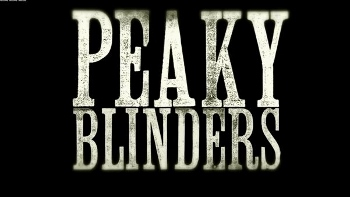
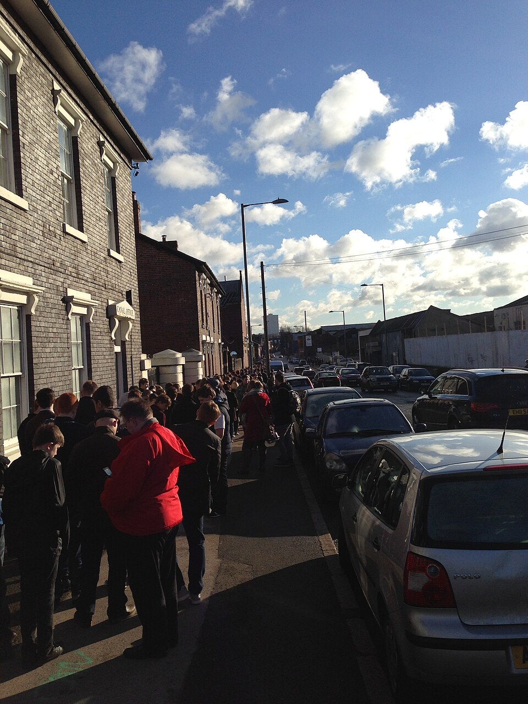

Oque é?
Peaky Blinders é uma série de televisão britânica de drama criada por Steven Knight. Situado em Birmingham, na Inglaterra, segue as façanhas da gangue criminosa Peaky Blinders logo após a Primeira Guerra Mundial. A gangue fictícia é vagamente baseada em uma gangue urbana de jovens reais de mesmo nome que esteve ativa na cidade de 1890 a 1910.
Ela apresenta um elenco liderado por Cillian Murphy, estrelando como Tommy Shelby, Helen McCrory como Elizabeth "Polly" Gray, Paul Anderson como Arthur Shelby e Joe Cole como John Shelby, os membros mais antigos da gangue. Tom Hardy, Sam Neill, Annabelle Wallis, Iddo Goldberg, Charlotte Riley, Paddy Considine, Adrien Brody, Aidan Gillen, Anya Taylor-Joy, Sam Claflin, James Frecheville e Stephen Graham têm papéis recorrentes. A série estreou em 12 de setembro de 2013, transmitida na BBC Two até a quarta temporada (com repetições na BBC Four), depois mudou-se para a BBC One para a quinta e sexta temporada.
A quinta temporada estreou na BBC One em 25 de agosto de 2019 e terminou em 22 de setembro de 2019. A Netflix, sob um acordo com a Weinstein Company e a Endemol, adquiriu os direitos de lançamento da série nos Estados Unidos e em todo o mundo. Em janeiro de 2021, foi anunciado que a sexta temporada seria a última, seguida por um filme derivado. A sexta temporada estreou com aclamação da crítica em 27 de fevereiro de 2022 e foi concluída em 3 de abril de 2022.
Enredo
Os Peaky Blinders são uma organização criminosa de origem cigana que se passa na cidade de Birmingham, Inglaterra, em 1919, formada vários meses após o final da Primeira Guerra Mundial (1914-1918). A história é centrada na ambição do líder da gangue inglesa, Thomas "Tommy" Shelby (Cillian Murphy). A gangue chama a atenção do major irlandês, Chester Campbell (Sam Neill), um inspetor-chefe de polícia do Royal Irish Constabulary (RIC) de Belfast, Irlanda do Norte, enviado por Winston Churchill, sendo contratado para limpar a cidade do Exército Republicano Irlandês (IRA) (1919-1922), comunistas, gangues e criminosos comuns. Churchill ordenou Campbell eliminar as desordens e rebeliões em Birmingham, visando recuperar um esconderijo roubado de armas que deveria ser enviado para a Líbia Italiana (1934-1943).
Em 1921, a família Shelby expande sua organização criminosa no "Sul e Norte, mantendo uma fortaleza no coração de Birmingham." Em 1924, Tommy e sua família entram em situações mais perigosas à medida que os negócios se expandem novamente, envolvendo também organizações anticomunistas. Após ter que lidar com a greve geral no Reino Unido (1926) e disputas com a máfia ítalo-americana, Tommy torna-se membro do Parlamento Inglês em 1927. Dois anos depois, durante a Quinta-Feira Negra (1929) — precedendo posteriormente a Grande Depressão, a trama inicia-se com uma manifestação liderada pelo líder fascista inglês, Oswald Mosley.

Produção
Peaky Blinders foi criado por Steven Knight, e na primeira temporada dirigido por Otto Bathurst e produzido por Katie Swinden. Os escritores são listados como Steven Knight, Stephen Russell e Toby Finlay.
A Screen Yorkshire forneceu financiamento para a produção através do Yorkshire Content Fund, garantindo que a maior parte da série fosse filmado em Yorkshire como parte do acordo. A série foi filmada em Birmingham, Bradford, Dudley, Leeds, Liverpool e Port Sunlight. Sequências ferroviárias foram filmadas entre Keighley e Damems, usando carruagens do Ingrow Museum of Rail Travel (de propriedade da Vintage Carriages Trust), e carruagens de propriedade do Lancashire and Yorkshire Railway Trust. Muitas das cenas da série foram filmadas no Black Country Living Museum.
Nascido no Ulster e criado na Nova Zelândia, Sam Neill contou com a ajuda dos atores da Irlanda do Norte James Nesbitt e Liam Neeson para influênciá-lo a recuperar seu sotaque da Irlanda do Norte perdido para o papel do Inspetor Campbell. No final, ele teve que suavizar o sotaque, já que a série está sendo comercializada nos Estados Unidos. De forma polêmica, a produção não contratou linguistas para ajudar na série, o que levou ao fato dos ciganos falarem frequentemente um romeno quebrado (em contrapartida ao romani).
